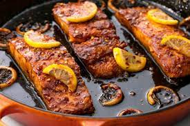

Honey Garlic Salmon

Description
A perfect sweet and savoury 5-ingredient garlicky sauce with a hint of lemon will become your family’s new salmon obsession.
Honey Garlic Salmon = dinner ready in under 15 minutes, including prep time!!
Ingredients
- 4 wild caught salmon fillets about 1/2 pound or 250 grams each, skin off or on
- Salt and pepper, to season
- 1/2 teaspoon paprika (mild, sweet or smokey)
- 2 tablespoons butter
- 4 cloves garlic, finely chopped or minced
- 4 tablespoons honey
- 1 tablespoon water
- 2 teaspoons soy sauce
- 1 tablespoon fresh squeezed lemon juice, (plus extra to serve)
- Lemon wedges to serve
Steps
- Arrange oven shelf to the middle of your oven. Preheat oven to broil/grill settings on medium heat.
- Season salmon with salt, pepper and paprika. Set aside.
- Heat the butter in a skillet or pan over medium-high heat until melted. Add the garlic and sauté for about a minute, until fragrant. Pour in the honey, water and soy sauce; allow the flavours to heat through and combine. Add in the lemon juice; stir well to combine all of the flavours together.
- Add the salmon steaks to the sauce in the pan; cook each fillet (skin-side down if there's any skin) for 3-4 minutes or until golden, while basting the tops with the pan juices. Season with salt and pepper, to taste (if desired).
- Optional -- Add the lemon wedges around the salmon (adds a stronger lemon taste).
Baste salmon one more time then transfer the pan to your oven to broil / grill for a further 5-6 minutes, or until the tops of the salmon are nicely charred, and the salmon is cooked to your liking.
- To serve, drizzle with the sauce and a squeeze of lemon juice. Serve with steamed vegetables; over rice or with a salad.